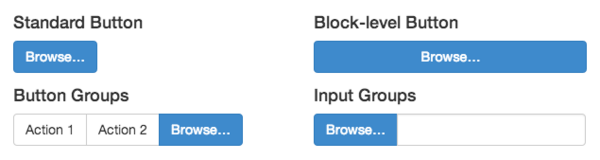

Whipping file inputs into shape with Bootstrap
There are many, many, many ways to hack a file input so it looks and behaves consistently across all browsers. There's even a pretty slick plugin to help get the job done. Unfortunately, most of these solutions are cumbersome, prone to cross-browser issues, and require JavaScript.
Today, I would like to propose a more fundamental approach for file inputs in Bootstrap 3 and 4.
Modern approach (IE9+) #
Let's start by nesting a button inside a <label>,
adding the appropriate button classes to style it as we want:
<label class="btn btn-default btn-file">
Browse <input type="file" style="display: none;">
</label>
Legacy approach (IE8 and below) #
If you need support for old IE, you can use this legacy approach.
Instead of a <label>, wrap your button in a
<span>:
<span class="btn btn-default btn-file">
Browse <input type="file">
</span>
And then apply the following CSS:
.btn-file {
position: relative;
overflow: hidden;
}
.btn-file input[type=file] {
position: absolute;
top: 0;
right: 0;
min-width: 100%;
min-height: 100%;
font-size: 100px;
text-align: right;
filter: alpha(opacity=0);
opacity: 0;
outline: none;
background: white;
cursor: inherit;
display: block;
}
Customizing the button's appearance #
So far so good. Whether you're using the modern approach or the legacy
approach, clicking on the "button" will trigger the file
input. As a bonus, it will also acquire the :hover and
:active pseudo classes so it behaves like a real button
too.
You can use these buttons like you normally would…by themselves, in a button group, or even in an input group.

Providing feedback #
Now with the hard part out of the way, it's a good practice to provide
users with a bit of feedback about their selection. A touch of jQuery
magic will keep an eye on your file inputs and fire an event
called fileselect when a file is chosen:
$(document).on('change', ':file', function() {
var input = $(this);
var numFiles = input.get(0).files ? input.get(0).files.length : 1;
var label = input.val().replace(/\\/g, '/').replace(/.*\//, '');
input.trigger('fileselect', [numFiles, label]);
});
Here's an example to demonstrate the event:
$(document).ready(function() {
$(':file').on('fileselect', function(event, numFiles, label) {
console.log(numFiles);
console.log(label);
});
});
You can use the numFiles or label parameter
to show users the name of the file that was selected and, if
applicable, how many. Alternatively, you could elect to use the
standard change event and handle the label yourself.
This method was tested to work in IE8–IE11 and recent versions of Chrome, Safari, Firefox, and Opera.
See it in action #
For a live demo that you can tinker with, view the demo CodePen.
May 20, 2016: added the modern approach and updated the demo.